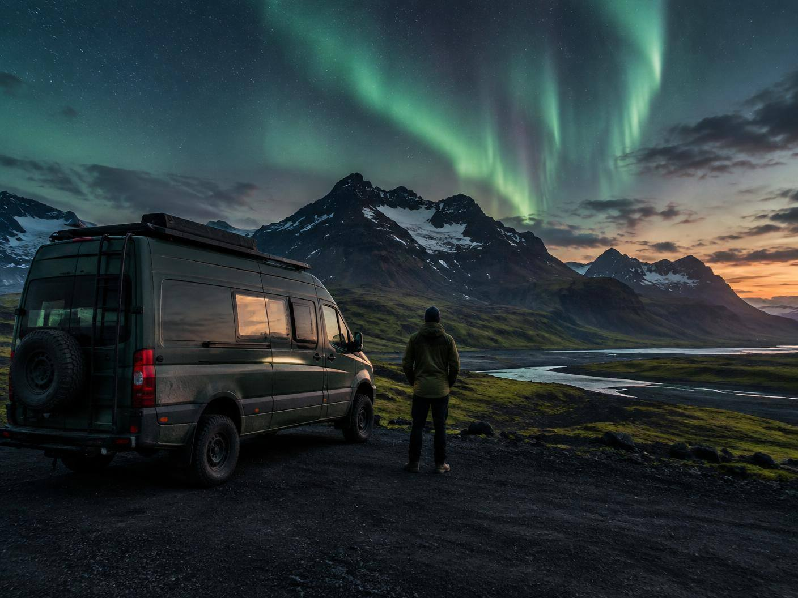
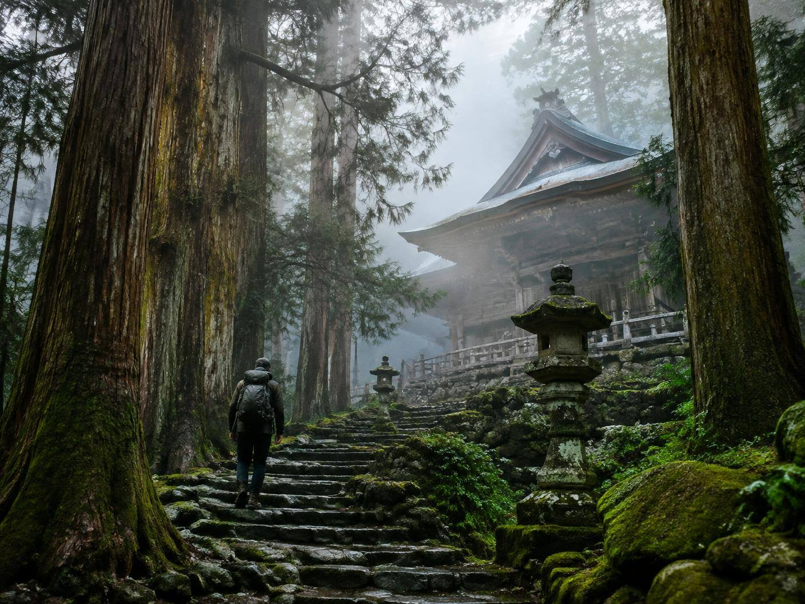
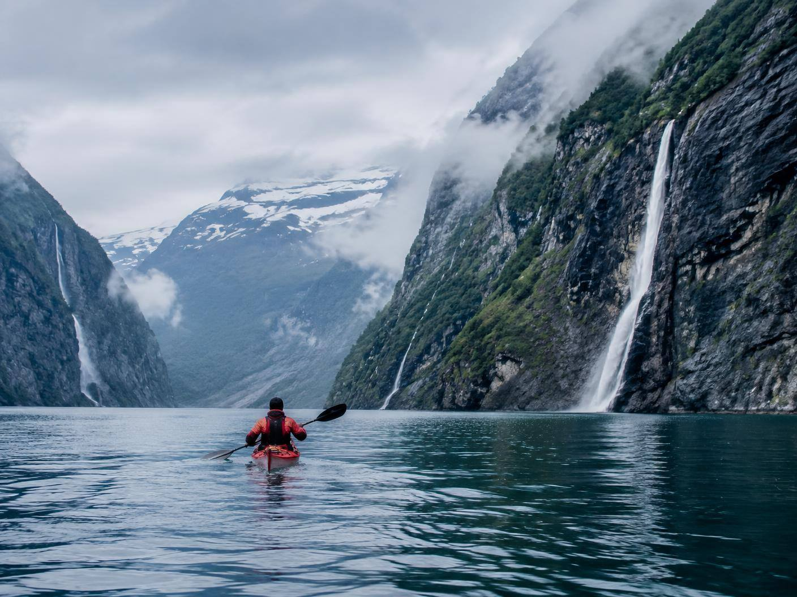
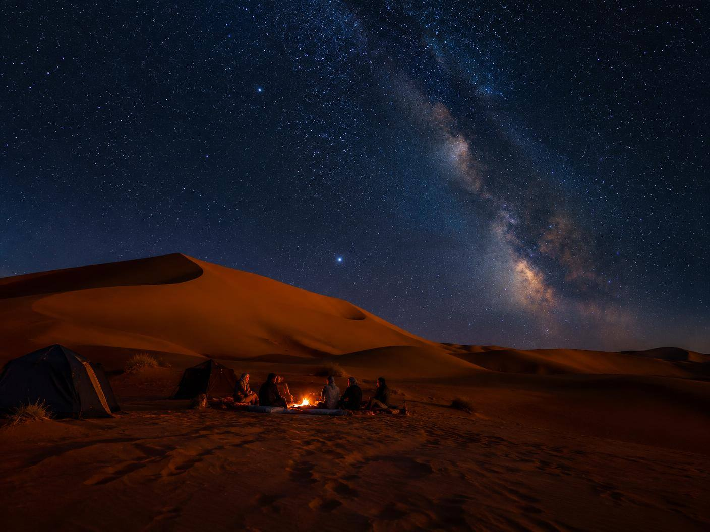
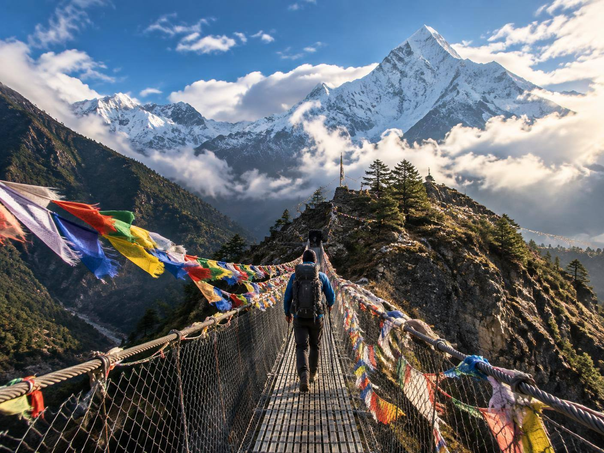
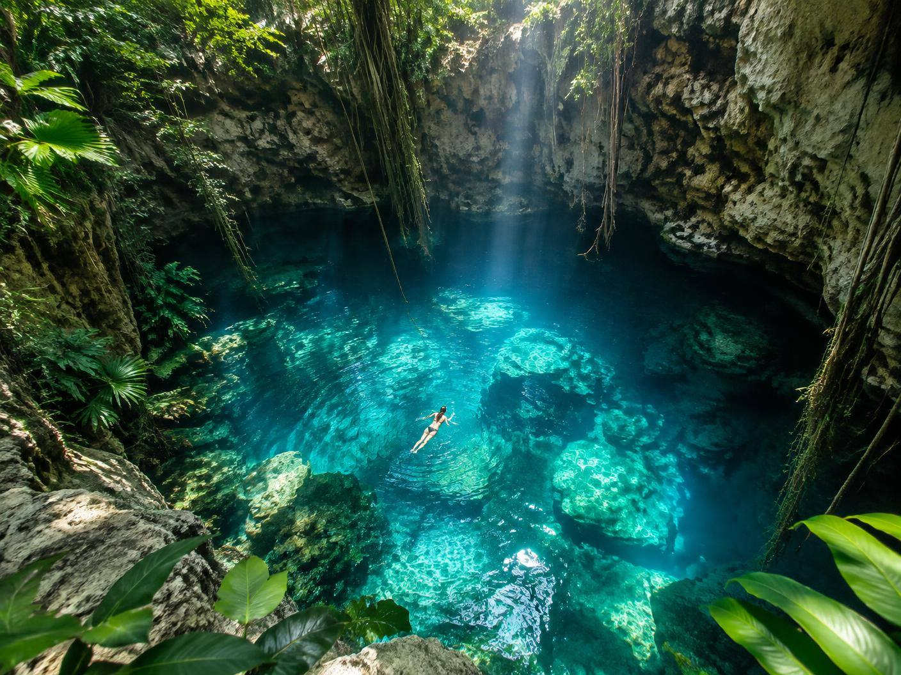

Nivel 3/5
64.9631° N · 19.0208° W
Nivel 3/5
64.9631° N · 19.0208° W
Islandia 01
Perseguir auroras en una camper
Carreteras volcánicas, aguas termales y noches bajo un cielo imposible.
Descubrir →
Edición 01 / Rutas del norte
Agencia de aventuras no convencionales
No organizamos vacaciones. Encontramos historias que todavía no sabes que vas a contar.
Explorar aventuras01 / 05
Elige cuánto quieres alejarte de la ruta marcada.
Destino
Tipo de aventura
Nivel máximo
6 aventuras encontradas
Actualizado / 18.09.2026
02 / 05
Seis formas de volver siendo otra persona.
Nivel 3/5
64.9631° N · 19.0208° W
Islandia 01
Carreteras volcánicas, aguas termales y noches bajo un cielo imposible.
Descubrir →
Nivel 2/5 34.2125° N · 135.5864° EJapón 02
Una peregrinación entre cedros milenarios hasta el Japón que no sale en las guías.
Descubrir →
Nivel 4/5 62.1015° N · 7.0941° ENoruega 03
Remar entre paredes de roca, cascadas y un silencio que se siente físico.
Descubrir →
Nivel 3/5 31.0802° N · 4.0134° WMarruecos 04
Cruzar el Erg Chebbi y acampar donde la contaminación lumínica no existe.
Descubrir →
Nivel 5/5 27.9881° N · 86.9250° ENepal 05
Senderos suspendidos, aldeas sherpa y el Himalaya abriéndose paso entre las nubes.
Descubrir →
Nivel 2/5 20.6843° N · 88.5678° WMéxico 06
Selva, roca caliza y agua transparente en una cavidad conocida por muy pocos.
Descubrir →03 / 05
Abre el atlas. El resto lo decidimos sobre la marcha.
04 / 05
Una escala científicamente imprecisa. Brutalmente honesta.
05 / Cómo funciona

Próxima salida / cuando tú decidas
Empieza a buscarlo.
Encuentra tu aventura